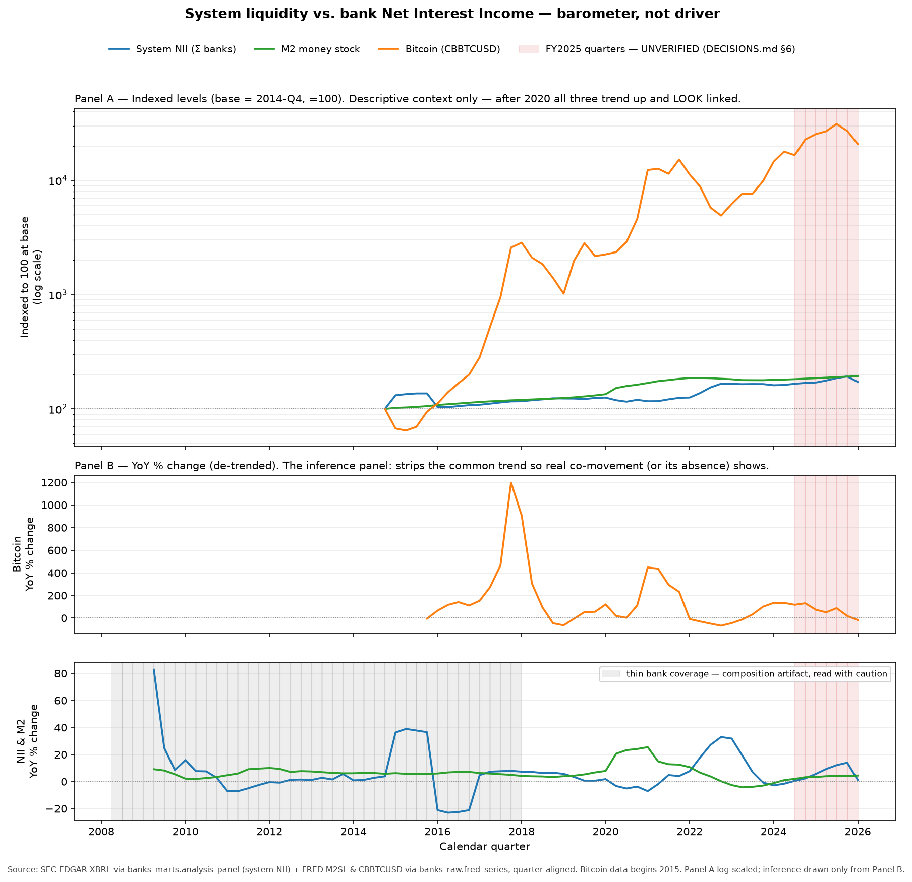

MSBAi · Assignment 2 · US public banks & the flood of money
System liquidity vs. bank Net Interest Income
Does system liquidity — the money supply, policy rates, and the
yield-curve slope — drive US bank net interest income (NII), with bitcoin a
barometer of that liquidity rather than a cause of bank revenue?
Method. A quarter-aligned panel of US public banks (SEC EDGAR
XBRL) joined to FRED liquidity series (M2, fed funds, yield slope) and bitcoin;
modeled in growth/changes rather than levels, with a temporal split and no imputation.
The figure

Quarterly, 2008-Q2 – 2026-Q1 (72 quarters).
System NII = sum of NII across all banks per calendar quarter (SEC EDGAR XBRL,
banks_marts.analysis_panel); M2 = FRED M2SL, bitcoin = FRED
CBBTCUSD, both quarterly averages (banks_raw.fred_series).
Bitcoin observations begin 2014-Q4.
Panel A — indexed levels. Each series indexed to 100 at 2014-Q4, the
first quarter all three are present; log y-axis so all three read across more than
two orders of magnitude. Descriptive context only.
Panel B — year-over-year % change (the inference panel). Split into two
sub-panels on independent scales: bitcoin alone (its swings reach ~1,200%) above,
NII and M2 together below, so bitcoin's volatility does not flatten the NII–M2 view.
Red shading — FY2025 quarters (6): 2024-Q3 – 2025-Q4.
Flagged UNVERIFIED — figures rely on filed XBRL not yet reconciled to the published FY2025 10-K.
Grey shading — thin bank coverage: 2008-Q2 – 2017-Q4 (39 quarters).
Quarters where fewer than 160 banks report; the system-NII sum is composition-sensitive here, so early swings are artifacts, not economics.
Reconciled figures
Coverage span
72 quarters, 2008-Q2 → 2026-Q1
Bitcoin data begins
2014-Q4 (first observation) = index base quarter
Bank coverage
ramps from 16 (2008) to a stable 164–169 (~167) from 2020 on
Thin-coverage window
n_banks < 160 → 2008-Q2 – 2017-Q4; stable from 2018-Q1
FY2025 (UNVERIFIED)
6 quarters, 2024-Q3 – 2025-Q4
Findings
Placeholder — to be written by the author
This section is intentionally left blank. Write the interpretation of the figure here —
what the de-trended Panel B shows about co-movement (or its absence) between liquidity
and NII, and where the barometer reading holds or breaks.
Read inference only from Panel B, and only over the stable-coverage period (2018 on).
Treat the grey (thin-coverage) and red (FY2025 unverified) windows with the stated caution.
Keep causal language to the rate → NII channel; bitcoin is co-movement only.